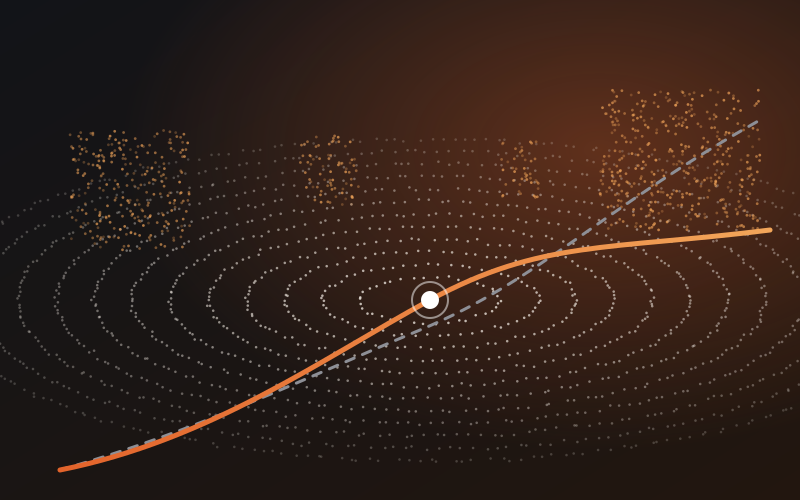

lidar-inertial odometry
Robust Point-LIO under unknown IMU disturbances
Studied how unknown external IMU disturbances degrade Point-LIO localization, and developed an adaptive EKF that estimates and compensates for them online. A reduced-state formulation cuts the estimator state from 24 to 18 dimensions while still estimating the unknown sensor disturbances.
→ under review, IEEE RA-L